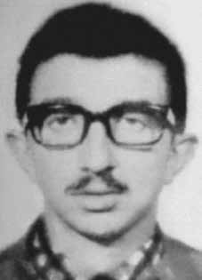

Joelson
Crispim
CIRCUNSTÂNCIAS DA MORTE
Joelson Crispim morreu no dia 22 de abril de 1970. De acordo com a versão oficial dos fatos apresentada pelos órgãos de repressão do Estado na ocasião, Joelson morreu em confronto com agentes dos órgãos de segurança, quando foi ferido por disparo de arma de fogo. Passados mais de 40 anos da morte de Joelson Crispim, as investigações sobre o caso revelaram a existência de elementos que permitem apontar a falsidade da versão divulgada pelos órgãos de repressão, dentre os quais se destacam alguns a seguir. A abertura dos arquivos do Departamento de Ordem Política e Social de São Paulo (DOPS/SP) permitiu a identificação de um relatório da Casa de Saúde Dom Pedro II, informando que Joelson havia sido levado para lá com cinco ferimentos provocados por projétil de arma de fogo e que havia morrido “antes de intervenção cirúrgica”. Embora o relatório indique que os agentes do estado conheciam a identidade de Joelson, o corpo deu entrada no Instituto Médico-Legal (IML) como desconhecido. Além disso, o atestado de óbito de Joelson foi registrado com o nome falso de “Roberto Paulo Wilda”, sem nenhuma referência ao local do sepultamento. O relator do caso na CEMDP, deputado Nilmário Miranda, concluiu seu voto a respeito do caso de Joelson Crispim afirmando que: “a identificação falsa de Joelson e seu sepultamento como indigente constituem as evidências maiores de que sua morte deu-se por execução sumária pelos agentes da repressão”. Nos documentos do Projeto Brasil: Nunca Mais mencionados nos autos do processo junto à Comissão Especial, consta que os responsáveis pela morte de Joelson foram agentes do Destacamento de Operações de Informações – Centro de Operações de Defesa Interna de São Paulo (DOI-CODI/SP), comandados pelo capitão Coutinho (Francisco Antônio Coutinho e Silva). Em entrevista à imprensa, Francisco Antônio da Silva “confirmou que era mesmo o Capitão Coutinho, que serviu na Operação Bandeirante (Oban) em 1969 e no DOI-CODI do II Exército em 1971-1972”, embora ressaltasse que não tinha conhecimento sobre torturas nos dois órgãos por onde passou. A família de Joelson solicitou à CEMDP a localização e identificação dos seus restos mortais. Joelson foi enterrado como indigente, com nome falso, no Cemitério de Vila Formosa, em São Paulo (SP). Entretanto, a ausência de registros exatos do local de sepultamento impediram a localização e identificação de seus restos mortais.
Joelson Crispim died on April 22, 1970. According to the official version of events presented by the State repression bodies at the time, Joelson died in a confrontation with agents from the security bodies, when he was injured by a gunshot. More than 40 years after Joelson Crispim's death, investigations into the case revealed the existence of elements that make it possible to point out the falsehood of the version released by law enforcement agencies, some of which stand out below. The opening of the files of the Department of Political and Social Order of São Paulo (DOPS/SP) allowed the identification of a report from Casa de Saúde Dom Pedro II, stating that Joelson had been taken there with five injuries caused by a firearm projectile and that he had died “before surgical intervention”. Although the report indicates that state agents knew Joelson's identity, the body was admitted to the Medical-Legal Institute (IML) as unknown. Furthermore, Joelson's death certificate was registered under the false name of “Roberto Paulo Wilda”, without any reference to the place of burial. The rapporteur of the case at CEMDP, deputy Nilmário Miranda, concluded his vote regarding the case of Joelson Crispim by stating that: “Joelson's false identification and his burial as a pauper constitute the strongest evidence that his death was due to summary execution by agents of repression”. In the Brazil: Never Again Project documents mentioned in the case files with the Special Commission, it is stated that those responsible for Joelson's death were agents from the Information Operations Detachment – São Paulo Internal Defense Operations Center (DOI-CODI/SP), commanded by Captain Coutinho (Francisco Antônio Coutinho e Silva). In an interview with the press, Francisco Antônio da Silva “confirmed that he was indeed Captain Coutinho, who served in Operation Bandeirante (Oban) in 1969 and in the DOI-CODI of the II Army in 1971-1972”, although he highlighted that he had no knowledge of torture in the two bodies he passed through. Joelson's family asked CEMDP to locate and identify his remains. Joelson was buried as a pauper, under a false name, in the Vila Formosa Cemetery, in São Paulo (SP). However, the lack of exact records of the burial place prevented the location and identification of his remains.
Joelson Crispim murió el 22 de abril de 1970. Según la versión oficial de los hechos presentada por los órganos de represión del Estado en ese momento, Joelson murió en un enfrentamiento con agentes de los cuerpos de seguridad, al resultar herido de bala. A más de 40 años de la muerte de Joelson Crispim, las investigaciones del caso revelaron la existencia de elementos que permiten señalar la falsedad de la versión difundida por las fuerzas del orden, algunos de los cuales se destacan a continuación. La apertura de los expedientes del Departamento de Orden Político y Social de São Paulo (DOPS/SP) permitió identificar un informe de la Casa de Salud Dom Pedro II, que afirmaba que Joelson había sido llevado allí con cinco heridas provocadas por un proyectil de arma de fuego y que había muerto “antes de la intervención quirúrgica”. Aunque el informe indica que agentes estatales conocían la identidad de Joelson, el cuerpo fue ingresado al Instituto Médico Legal (IML) como desconocido. Además, el certificado de defunción de Joelson fue registrado con el nombre falso de “Roberto Paulo Wilda”, sin referencia alguna al lugar de su sepultura. El relator del caso en el CEMDP, diputado Nilmário Miranda, concluyó su voto sobre el caso de Joelson Crispim afirmando que: “La identificación falsa de Joelson y su entierro como indigente constituyen la evidencia más fuerte de que su muerte se debió a una ejecución sumaria por parte de agentes de represión”. En los documentos del Proyecto Brasil: Nunca Más mencionados en el expediente ante la Comisión Especial, se afirma que los responsables de la muerte de Joelson fueron agentes del Destacamento de Operaciones de Información – Centro de Operaciones de Defensa Interna de São Paulo (DOI-CODI/SP), comandado por el Capitán Coutinho (Francisco Antônio Coutinho e Silva). En entrevista con la prensa, Francisco Antônio da Silva “confirmó que efectivamente se trataba del capitán Coutinho, que sirvió en la Operación Bandeirante (Oban) en 1969 y en el DOI-CODI del II Ejército en 1971-1972”, aunque destacó que no tenía conocimiento de torturas en los dos cuerpos por los que pasó. La familia de Joelson pidió al CEMDP que localizara e identificara sus restos. Joelson fue enterrado como indigente, con un nombre falso, en el cementerio de Vila Formosa, en São Paulo (SP). Sin embargo, la falta de registros exactos del lugar de enterramiento impidió la localización e identificación de sus restos.